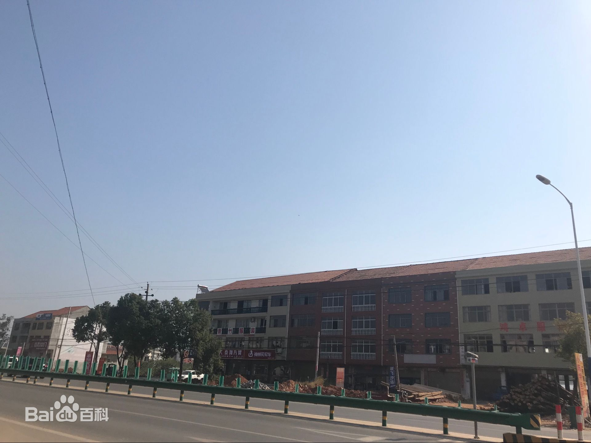

武穴历史
武穴历史悠久，据考古学家在境内大金镇尺山遗址发现，远在新古器时代3000-5000年以前，武穴就有人类活动。
夏商周时代属荆州管辖；春秋战国属楚国；
秦朝属九江郡；汉代属江夏郡（《湖北通志》载：“广济为汉蕲春、浔阳二县地）；三国时属吴，隶属蕲春郡；西晋时期，广济境地仍分属蕲春、寻阳二县。
东晋太元三年（公元378年）改蕲春名为蕲阳。义熙八年（公元412年），寻阳县治迁至江南柴桑，原江北境地划入蕲阳。至此，改蕲阳县名为齐昌。陈太建五年（公元573年），齐昌地属陈。公元579年，北周占齐昌地，将广济境地从齐昌县划出，立为永宁县，隶属蕲州齐昌郡。
隋初，永宁县属蕲州总管府（后改称蕲州、蕲春郡）。隋末，废永宁县制，并入蕲春县。
唐武德四年（公元621年），又分蕲春，复置永宁县，属淮南道蕲州。天宝元年（公元742年）因与河南永宁县和江南东道永宁县同名，唐玄宗乃亲自取佛教语“广施佛法，普济众生”之意改名广济县，属蕲州郡；乾元元年（公元758年），改蕲州郡为州，广济仍隶属。
五代十国，属淮南道蕲州。
宋代，熙宁五年（公元1072年）属淮南西路蕲州。
高宗南渡后，绍兴五年（公元1135年）废县为镇，不久恢复县置。
元代，广济属河南江北行省蕲州路。
明代，洪武元年（公元1368年）改蕲州路为府，广济属该府。洪武九年降蕲州府为州，广济属湖广布政使司黄州府蕲州，不久改属河南布政使司。洪武二十四年还属湖广。
清代，初属蕲州，康熙三年（公元1664年）属黄州府。清末废府立道，广济属湖北省江汉道。
民国初，广济仍属江汉道。1926年废道，广济直属湖北省。1932年10月，实行省、专、县三级制，广济属第三行政督察区。1936年改属第二行政督察区。1940年属鄂东行署。1945年11月属湖北省第二行政督察区。
1949年，中华人民共和国成立以后，设立为广济县，一直隶属湖北省黄冈地区。
1987年10月23日，撤销广济县，设立武穴市，以驻地武穴镇为名。

1996年，武穴市面积1200.4平方千米，人口约70万人。辖4个街道、8个镇、4个乡：武穴街道、刊江街道、田镇街道、龙坪街道、梅川镇、余川镇、花桥镇、郑公塔镇、大金镇、石佛寺镇、四望镇、大法寺镇、横岗乡、太平乡、两路乡、南泉乡。市政府驻武穴。境内有1个国有农场和1个科技经济开发区。
1997年12月，经省政府批准，撤销两路乡，设立两路镇，镇政府驻地由雀儿山迁至登高山。
1998年12月，经省政府批准，田镇街道办事处驻地迁至盘塘。至此，全市辖4个街道、9个镇、3个乡、1个农场。
2000年12月，经省政府批准，撤销两路镇、横岗乡、南泉乡，并入梅川镇；撤销太平乡，并入余川镇；撤销郑公塔镇，并入花桥镇；撤销龙坪街道，设立龙坪镇。同年，将刊江街道的江家林、吴谷英、新矶、樟树下、朱奇武、郭应龙6个行政村划归武穴街道管辖。调整后，全市辖3个街道、8个镇（包含1个农场）：武穴街道、刊江街道、田家镇街道、梅川镇、余川镇、花桥镇、大金镇、四望镇、石佛寺镇、大法寺镇、龙坪镇（包含国营万丈湖农场区域）。
2004年11月，经省人民政府批准，设立万丈湖街道办事处，其行政区域为原国营万丈湖农场辖区，驻地新港，同时经市人民政府批准，设立黄湖村、太泊村、万丈湖村和新港社区居委会。至2005年，全市行政区划为4街道办事处、8镇。